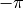
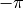
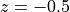
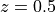
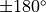

Basic example¶
This basic example is available in the examples/mccyl/basic.py file.
The functionality of cylindrical Monte Carlo (MC) is available through the
xopto.mccyl.mc module.
from xopto.mccyl import mc
The layer stack¶
The concentric layers of the medium can be defined through the
xopto.mccyl.mclayer submodule. The concentric layers are stacked
from the outermost to the innermost layer and centered at  .
.
The outermost layer of the stack is used to describe the medium that surrounds the sample. Therefore, at least two layers must be always defined, namely the layer of the surrounding medium and one sample layer!
The diameter of the outermost layers will be automatically set to infinity regardless of the specified layer diameter.
Note that all the layers in the stack must use the same scattering phase
function model. A variety of scattering phase function models is available
through the xopto.mccyl.mcpf submodule.
In this example the turbid sample is located inside a transparent glass cuvette.
The outer diameter of the cylindrical cuvette is set to 10 mm and the
refractive index to 1.45.
The inner diameter of the cylindrical cuvette is set to 8 mm (thickness
of the glass wall is 1 mm).
The turbid sample that fills the cuvette has an absorption coefficient
mua=1.0 cm -1, scattering coefficient
mus=50.0 cm -1, a Henyey-Greenstein scattering phase
function (Hg) with an anisotropy g=0.8 and
refractive index 1.33. The cuvette is surrounded by a layer of air with an
outer diameter of 100 mm.
layers = mc.mclayer.Layers(
[
mc.mclayer.Layer(n=1.00, d=np.inf, mua=0.0e2, mus=0.0e2, pf=mc.mcpf.Hg(0.0))
mc.mclayer.Layer(n=1.00, d=100e-3, mua=0.0e2, mus=0.0e2, pf=mc.mcpf.Hg(0.0))
mc.mclayer.Layer(n=1.45, d=10e-3, mua=0.0e2, mus=0.0e2, pf=mc.mcpf.Hg(0.0)),
mc.mclayer.Layer(n=1.33, d=8.0e-3, mua=1.0e2, mus=50.0e2, pf=mc.mcpf.Hg(0.8)),
]
)
Note that the absorption coefficient mua, scattering coefficient
mus and the scattering phase function pf of the
outermost layer are not used in the MC simulations, since the
photon packets are not propagated through the surrounding medium.
However, the refractive index n of the two outermost
layer is used to properly refract/reflect the photon packet at the sample
surface when launched by the source or when escaping the sample.
The layer diameter d should be given in m and the values of the
scattering coefficient mus and absorption coefficient
mua in m -1.
The photon packet source¶
Different sources of photon packets are available through the
xopto.mccyl.mcsource module. The following example creates a basic
collimated Gaussian source that enters the sample in the direction of the
 axis. The standard deviation of the beam is set to
μm.
axis. The standard deviation of the beam is set to
μm.
source = mc.mcsource.GaussianBeam(100e-6)
The detector¶
The photon packets can be collected by a surface detector after exiting the
sample surface. Different types of surface detectors are
available through the xopto.mccyl.mcdetector module.
detectors = mc.mcdetector.Detectors(
outer = mc.mcdetector.FiZ(
mc.mcdetector.Axis(-np.pi, np.pi, 360),
mc.mcdetector.Axis(-1.5e-3, 1.5e-3, 3)
)
)
In the above example, we create a polar detector at the outer sample surface.
The angular resolution is set to 1° and spans the full valid range from
-180° to 180° (note that the angles must be given in radians). The detector
has 3 accumulators along the  axis, each 1 mm in height.
Note that the valid range of polar angle
axis, each 1 mm in height.
Note that the valid range of polar angle  is from 
to
is from 
to  , and that the first and last accumulator along the polar
and axis also collect the weight of all the
photon packets that exceed the lower and upper bounds of the range.
, and that the first and last accumulator along the polar
and axis also collect the weight of all the
photon packets that exceed the lower and upper bounds of the range.
The OpenCL device¶
The OpenCL device that will run the MC simulations can be selected through the
xopto.cl.clinfo module. In the following example we pick the first
available GPU device.
gpu = clinfo.gpu()
The Monte Carlo simulator¶
Next, we create a Monte Carlo simulator instance from the created layer stack, photon packet source and detectors.
mc_obj = mc.Mc(layers, source, detectors, cl_devices=gpu)
Optionally, we can limit the maximum simulation radius that is measured from the position of the photon packet source. In this example, we limit the simulation radius to 1000 mm.
mc_obj.rmax = 1000.0e-3
Finally, we can run the simulator instance with a given number of photon
packets (10,000,000 in this example) and collect the results. The simulator
returns three objects/results, namely the trace, fluence and detectors. Since
in this basic example we only use the surface detectors, the remaining two
results (fluence and trace) will be returned as None.
trace_res, fluence_res, detectors_res = mc_obj.run(10e6)
Note that the photon packets that exit the sample within the acceptance cone
but at a distance / radius that exceeds the maximum radius of the
detector will be accumulated in the last concentric ring of the
Radial detector.
Visualization of results¶
We can plot the simulation results using the
matplotlib.pyplot
module. For a better visualization of the reflectance/transmittance a
logarithmic scale is used in the y axis of the plots. Note that we only use
the central ring of accumulators from  mm to
 mm that does not accumulate the photon packets that
exceed the lower (-1.5 mm) and upper (1.5 mm) range of
the axis. The increase in reflectance/transmittance near
 is due to specular reflection of the collimated
Gaussian beam from the outer and inner surfaces of the glass cuvette.
fig, ax = pp.subplots()
ax.semilogy(
np.rad2deg(detectors_res.outer.fi),
detectors_res.outer.reflectance[1]
)
ax.set_xlabel('Angle (°)')
ax.set_ylabel('Reflectance')
pp.show()
Reflectance/transmittance collected by the outer surface detector.

The complete example¶
# -*- coding: utf-8 -*-
################################ Begin license #################################
# Copyright (C) Laboratory of Imaging technologies,
# Faculty of Electrical Engineering,
# University of Ljubljana.
#
# This file is part of PyXOpto.
#
# PyXOpto is free software: you can redistribute it and/or modify
# it under the terms of the GNU General Public License as published by
# the Free Software Foundation, either version 3 of the License, or
# (at your option) any later version.
#
# PyXOpto is distributed in the hope that it will be useful,
# but WITHOUT ANY WARRANTY; without even the implied warranty of
# MERCHANTABILITY or FITNESS FOR A PARTICULAR PURPOSE. See the
# GNU General Public License for more details.
#
# You should have received a copy of the GNU General Public License
# along with PyXOpto. If not, see <https://www.gnu.org/licenses/>.
################################# End license ##################################
from xopto.mccyl import mc
from xopto.cl import clinfo
import numpy as np
from matplotlib import pyplot as pp
# creating the sample layer and the layer of the surrounding medium
layers = mc.mclayer.Layers(
[
mc.mclayer.Layer(n=1.00, d=np.inf, mua=0.0e2, mus=0.0e2, pf=mc.mcpf.Hg(0.0)),
mc.mclayer.Layer(n=1.00, d=100e-3, mua=0.0e2, mus=0.0e2, pf=mc.mcpf.Hg(0.0)),
mc.mclayer.Layer(n=1.45, d=10.0e-3, mua=0.0e2, mus=0.0e2, pf=mc.mcpf.Hg(0.0)),
mc.mclayer.Layer(n=1.33, d=8.0e-3, mua=1.0e2, mus=50.0e2, pf=mc.mcpf.Hg(0.8))
]
)
# creating the source of photon packets
source = mc.mcsource.GaussianBeam(100e-6)
# creating polar surface detector
detectors = mc.mcdetector.Detectors(
outer=mc.mcdetector.FiZ(
fiaxis=mc.mcdetector.Axis(-np.pi, np.pi, 360),
zaxis=mc.mcdetector.Axis(-1.5e-3, 1.5e-3, 3)
),
)
# selecting the first available OpenCL GPU device
gpu = clinfo.gpu()
# creating a Monte Carlo simulator
mc_obj = mc.Mc(layers, source, detectors, cl_devices=gpu)
mc_obj.rmax = 1000.0e-3
# running the MC simulation with 10,000,000 photon packets
trace_res, fluence_res, detectors_res = mc_obj.run(10e6, verbose=True)
# plotting the simulation results
fig, ax = pp.subplots()
ax.semilogy(
np.rad2deg(detectors_res.outer.fi),
detectors_res.outer.reflectance[1]
)
ax.set_xlabel('Angle (°)')
ax.set_ylabel('Reflectance/transmittance')
pp.tight_layout()
pp.show()
This example can be run from the root directory of the PyXOpto package as:
python examples/mccyl/basic.py